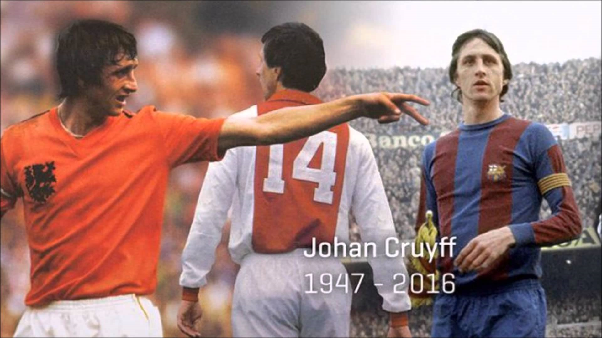

“EL FÚTBOL ES UN JUEGO QUE SE JUEGA CON EL CEREBRO. DEBES ESTAR EN EL LUGAR ADECUADO, EN EL MOMENTO ADECUADO. NI DEMASIADO PRONTO NI DEMASIADO TARDE”
(Amsterdam, 1947 - Barcelona, 2016) Jugador y entrenador de fútbol holandés. Hijo de una familia de modesta situación económica, a los diez años ingresó en el Ajax de Amsterdam, club en el cual permanecería hasta 1973 y con el que obtendría seis títulos de Liga y tres copas de Europa. Entre 1973 y 1978 jugó en el F. C. Barcelona, con el cual consiguió el Campeonato de Liga de 1974. Durante dichos años fue nombrado mejor futbolista europeo en tres ocasiones (1971, 1973 y 1974) y en 1974 fue designado mejor jugador del Mundial disputado aquel año. Tras su paso por el F. C. Barcelona recaló brevemente en la liga estadounidense y luego en el Levante español, para incorporarse de nuevo al Ajax como jugador, poco antes de retirarse de la práctica deportiva. Su posterior faceta de entrenador, que inició en el Ajax, estaría tan plagada de éxitos como la de jugador. Destacó sobre todo por su talante ofensivo y logró sus mayores victorias con el F. C. Barcelona, club al que entrenó entre 1988 y 1996. Durante dichos años logró cuatro ligas consecutivas (1991, 1992, 1993 y 1994) y una copa de Europa (1992). En 1998 creó la Universidad Johan Cruyff, que imparte estudios para la administración y gestión de entidades deportivas. En 1999 fue homenajeado en Barcelona y Amsterdam y fue nombrado asesor de la UEFA.
Johan Cruyff debutó en el fútbol de primera división con el Ajax el 15 de noviembre de 1964, a los 17 años. Por entonces era un joven delgado y larguirucho, de mucha elegancia y técnica individual, tan listo en el terreno de juego como fuera de él. Sus cambios de ritmo con el balón pegado a la bota lo hacían inalcanzable para sus marcadores. Dos años después, el Ajax ganó la Liga holandesa, circunstancia que se repetiría en siete ocasiones más. Recibió el Balón de Oro al mejor jugador europeo en los años 1971, 1973 y 1974.
La brillantez de su juego y el extraordinario palmarés que ostentaba pese a su juventud despertó el interés de muchos clubes; fue finalmente el F. C. Barcelona el que lo fichó en 1973 por cien millones de pesetas, una cantidad desorbitada en la época. Cruyff llegaba avalado por su trayectoria en el Ajax, con el que había ganado tres Copas de Europa consecutivas con un juego que sorprendía al mundo futbolístico. El 28 de octubre de 1973 debutó con el F. C. Barcelona en la Liga española de fútbol, en un partido contra el Granada. El Barcelona, que había empezado la competición con un juego mediocre, inició ese día una remontada que le llevaría al título; en su camino hacia la Liga destaca una histórica victoria sobre el Real Madrid por 0-5 en el Bernabéu. En las cinco temporadas que jugó con el Barça obtuvo también una Copa de España, y se convirtió en el ídolo de la afición culé.
Su aportación a la selección de su país fue decisiva y marcó una época. En 1974, con Cruyff como líder, la selección holandesa (apodada la naranja mecánica por su contundencia y el color de la camiseta) se convirtió en subcampeona del mundo con un juego asombroso. La base de la selección holandesa eran los jugadores y el sistema del Ajax, el famoso fútbol total que el técnico rumano Stefan Kovacs había impuesto al principio de los setenta en el club de Amsterdam. Con una mejor preparación física, presión en todo el campo, intercambio constante de posiciones y un fútbol rápido y ofensivo, la selección naranja arrolló a sus competidores en el Mundial de Alemania. El sistema fue posible gracias a un plantel de grandes jugadores dirigidos por Rinus Michels, entrenador del Barcelona esa misma temporada. Cruyff era el líder de un extraordinario conjunto de talentos como Van Hanegen, Krol, Rijsbergen, Rep y el incombustible Neeskens, fichado también por el Barça nada más acabar el Mundial. El fútbol neerlandés deslumbró a todo el mundo; sólo tenía un defecto: la falta de resolución final ante la portería, que fue, junto con el tradicional espíritu competitivo de los alemanes, lo que impidió derrotar en la final a los anfitriones.
La segunda etapa de Cruyff en el Barcelona la desarrolló como técnico. Fichado por el presidente José Luis Núñez el 4 de mayo de 1988, promovió como entrenador un juego vistoso, basado en la posesión del balón y en el espíritu ofensivo; por la calidad individual y colectiva de sus componentes, así como por su espíritu innovador y sus éxitos deportivos, su equipo sería conocido como el Dream Team y proporcionaría al club una de las etapas más brillantes de la historia. El Barcelona conquistó una Recopa de Europa (1989), una Copa del Rey (1990) y cuatro Ligas consecutivas (1990-1994). En 1992 llegó el título más soñado por los barcelonistas, la Copa de Europa. Igual que en sus tiempos de jugador, Cruyff no dejó en su etapa como técnico que nadie se metiese en su terreno; manejaba incluso la política de fichajes y salarios. Pese a sus extraordinarios triunfos, la mala gestión del equipo en 1996 movió a la directiva a cesarlo de su cargo. Inmediatamente, Cruyff recurrió la decisión ante los tribunales por considerarla despido improcedente. El enfrentamiento de Cruyff con la directiva azulgrana no se reflejó en la afición, que manifestó siempre su apoyo al ex jugador y ex técnico que tantos títulos había dado a su equipo. De hecho, Cruyff siguió viviendo en Barcelona, consciente de que seguía siendo un mito para los simpatizantes azulgranas. Los partidos de homenaje en el estadio barcelonista en marzo de 1999 registraron una gran asistencia de público. En 2009 recibió el encargo de dirigir la selección de fútbol de la Comunidad Autónoma de Cataluña, y en 2010 fue nombrado Presidente de Honor del Fútbol Club Barcelona. Aunque como jugador figura entre los grandes del siglo XX, al lado de nombres ilustres como los de Pelé, Beckenbauer o Maradona, es al tomar en consideración conjuntamente su trayectoria de futbolista y entrenador cuando Johan Cruyff se revela como uno de los personajes más influyentes de la historia del fútbol; entre el fútbol total de la selección holandesa y el estilo del Dream Team se advierte una solución de continuidad que se prolonga hasta el siglo XXI con el Barça de Pep Guardiola (gran centrocampista del Dream Team y técnico blaugrana en el glorioso cuatrienio 2008-2012), cuyos éxitos se consideran la herencia de su filosofía y de sus concepciones estratégicas y tácticas del juego.